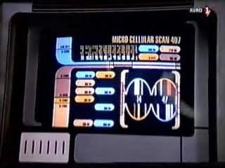

Data Stellare Sconosciuta: Mentre la Voyager sta attraversando
una regione di spazio caotico, Chakotay ha delle visioni in cui crede di
essere un pugile che si sta preparando per il Grande Incontro con il
grande campione Kid Chaos.
- Quando il Dottore
sta per mandare Chakotay di nuovo sul ring dopo l'ordine di Janeway, si vede
lo schermo dove il dottore sta lavorando che mostra un 14 e un 47. La stessa
schermata ha come titolo MICRO CELLULAR SCAN 407 [T:37:00].
- Sette di Nove dice che ha applicato 10053 (100 - 53 = 47) algoritmi alle
tracce energetiche prodotte dallo
spazio caotico.